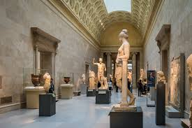
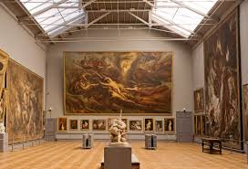
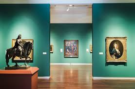

Calendar of Events
- August 3 Summer Exhibitions Opening Reception
- August 11 Workshop: Exploring Watercolors
- August 10 Young Artist Workshop
- August 17 Forum: Artist Critique Night
- August 16 Forum: Artist Critique Night
- August 25 Workshop: Exploring Oils
- September 8 Workshop: Exploring Giclee
- September 14 Young Artist Workshop
- September 20 Spoken Word Performance
- September 21 Forum: Artist Critique Night
- September 22 Workshop: Exploring Photography
- October 1 Fall Exhibitions Opening Reception
- October 12 Young Artist Workshop
- October 13 Workshop: Exploring Sculpture
- October 18 Forum: Artist Critique Night
- October 19 Forum: Artist Critique Night
- October 27 Workshop: Exploring Pastels
- November 2 Watermann Gallery Art Foundation Gala
- November 9 Young Artist Workshop
- November 10 Workshop: Exploring Metalwork
- November 15 Spoken Word Performance
- November 16 Forum: Artist Critique Night
- November 24 Workshop: Exploring Woodturning
- December 7 Young Artist Workshop
- December 14 Forum: Artist Critique Night
